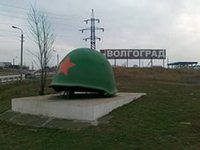

В Городищенском районе Волгоградской области, на въезде в город-герой Волгоград установлен памятный знак «Каска» отдающий дань памяти мужеству и героизму воинов 62-й Армии. Памятный знак – каска с пробоиной установлен на въезде в Волгоград рядом с федеральной трассой М6 «Каспий» (Москва-Волгоград) в 1975 году. Это один из первых символов победы советских войск в Сталинградской битве, который видят все, кто подъезжает к Волгограду со стороны столицы. Здесь же, рядом с солдатской каской, расположен огромный пограничный указатель, свидетельствующий, что с этого места начинается территория города-героя.

Памятный знак Каска
Описание
Фотографии

Расположение
 )
)
Расположение памятного знака Каска на интерактивной карте
Памятный знак Каска находится на въезде в г.Волгорд, на границе Городищенского района Волгоградской области.
При движении с московского направления ориентиром может служить поворот на Городище, после которого Вам останется проехать еще около 2 километров.
При движении из Волгограда, ориентиром может служить последний светофор в г.Волгоград, после которого до Каски останется проехать 1,5 километра.